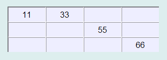
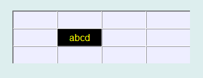

表格控件可以用列表形式显示和输入多个行文字或数字，实质就是一组文本输入控件，其显示的图形显示效果如下：

在Python程序GUI界面中创建一个表格控件的命令为:
hl=dr.dr.DRList(win,x,y,w,h,bg,fg,fontsize,col,row)
其中hl是创建时用户设定的变量名。标签控件有2个属性函数，可用于设定各单元格所显示的文字或数字，也可以用于获取其所显示的文字或数字。
hl.setItems(i,j,txt)
txt=hl.ax.getItems(i,j)
列表控件是从Tkinter的Entry控件继承而来，因此必要时还可以通过Tkinter_Entry控件的属性和方法来对其进行装饰。例如，下面语句将已创建的其中一个单元格的背景色和前景色做改变。
hl.axx[5].config(bg='#000000')
hl.axx[5].config(fg='#ffff00')
显示效果为：

更多有关Tkinter_Entry控件的详细用法请参阅Tkinter文献。
.